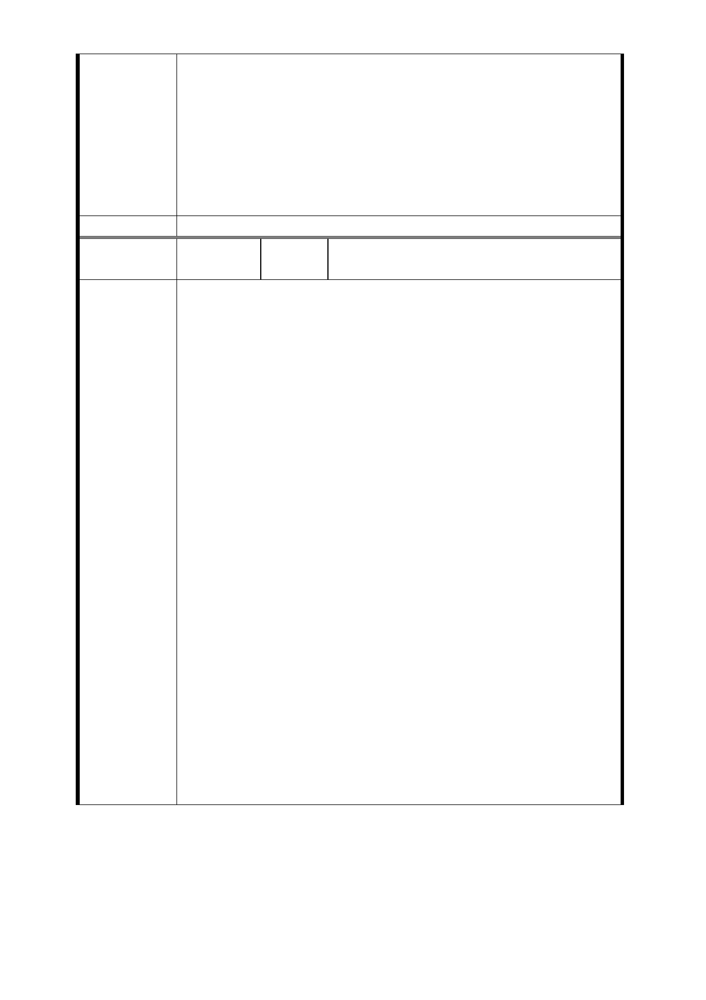

站建議採用以地主開發意願高及利用公有土地的替代方
案，LG03 車站以替選方案三（車站站位移設忠義國小）、
LG04 車站以替選方案（車站北移 85 公尺）設置車站及辦
理土地開發，使用學校等公有土地部分，請捷運局與忠義
國小、東園國小、萬大國小等之需求配合規劃，並維持玫
瑰堂大門進出之完整性。」辦理。
2. 本案經本府捷運工程局於 103 年 2 月 25 日召開座談會與
忠義國小北側私有土地所有權人溝通。
委員會決議 同編號交一－1 委員會決議。
編
號
LG03-2
（捷十）
陳情人
陳○榮（103.10.21）
一.依北市畫會一字第10330476900 號書函說明三稱謂：「有
關用地範園替代方案，雖不是最佳方案，但是反對聲音明顯
降低，可接受度大幅提升。」陳情人在此有意見反對此說法;
1.不是最佳方案，那最佳方案是何，為何不執行。因陳情人
強烈質疑，此變更為官商假捷運之名行土地開發之實，若依
變更方案LG02 與變更後LG03 相距不足400公尺，而變更後
LG03與LG04相距長達1400公尺，試問捷運為便民之所便，此
規畫所為如何，相信各位委員，必然知曉。
2.【但是反對聲音明顯降低，可接受度大幅提升】;請問各位
委員，如會議綜合表內最後一項言，僅在103.02.25開一次座
談會，陳情人們在不知詳情下，即可被斷此語。又104.10.20
在貴會要求下再次召開座談會，在無法給陳情人等明確承諾
陳情理由
及相關作業下，不知此座談會捷運局又給貴會如何報告。
3.捷運局聲稱持續與人溝通，確又對媒體發佈新聞(如附件
一) ，聲稱都已定案，在貴會都還未聽取如變更計畫後新陳
情人心聲，且捷運局又未與所有相關者達成一致下，即如此
處理，是否有強渡關山之嫌。
4.捷運局聲稱聯合開發是為民謀利，應該是被選上會感恩戴
德，但為何卻到處碰壁，陳情人對捷運局一些做法及動作不
于苟同，為保全本人權益，倘捷運局仍自行其是，陳情人只
好自行訴之法律、訴之社會，讓大眾做一公正評斷。
二.接此開會通知，因本人早與排定於2014.10.22至
2014.10.26至國外行商務(如附件二) ，無法參與此會議，雖
明知此會議對陳情人相關重大，但實無法分身，祇好以口頭
三分鐘能報告內容，行文與諸委員，代表本人參與此會議，
並將本陳情人意見傳達與會。
- 119 -